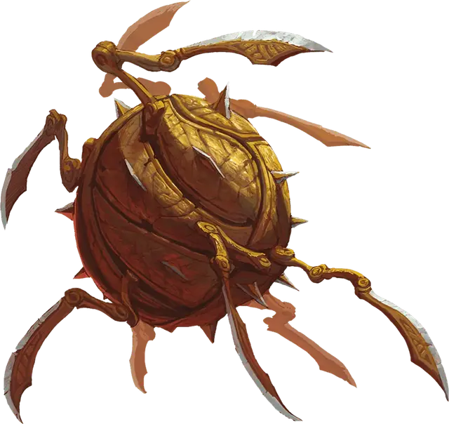

Конструкт хранитель снаряжения
Gearkeeper Construct
Большой Конструкт, без мировоззрения

Класс Доспеха 18 (природный доспех)
Хиты 161 (17к10 + 68)
Скорость 60 футов
| мод | спас | ||
|---|---|---|---|
| СИЛ | 20 | +5 | +5 |
| ЛОВ | 16 | +3 | +3 |
| ТЕЛ | 18 | +4 | +4 |
| мод | спас | ||
|---|---|---|---|
| ИНТ | 3 | −4 | −4 |
| МДР | 11 | +0 | +0 |
| ХАР | 1 | −5 | −5 |
Сопротивление урону дробящий, колющий, рубящий от немагических атак
Иммунитет к урону огонь, психическая энергия, яд
Иммунитет к состояниям испуг, истощение, окаменение, отравление, очарование, паралич
Чувства слепое зрение 120 футов, пассивное Восприятие 10
Опасность 10 (5900 опыта)
Бонус мастерства +4
Особенности
Языки. - понимает языки своего создателя, но не говорит.
Неизменяемая форма. Хранитель снаряжения обладает иммунитетом ко всем заклинаниям и эффектам, изменяющим его форму.
Быстрое перемещение. Провоцированные атаки по хранителю снаряжения совершаются с помехой.
Вращающиеся лезвия. Любое существо, которое начинает свой ход в пределах 5 футов от хранителя снаряжения, получает 4 (1к8) рубящего урона.
Действия
Мультиатака. Хранитель снаряжения совершает две атаки Наручным клинком или одну атаку Наручным клинком и одну атаку Метателем копий.
Наручный клинок. . Рукопашная атака оружием: +9 к попаданию, досягаемость 5 футов, одна цель. Попадание: 18 (3к8 + 5) рубящего урона.
Метатель копий. Дальнобойная атака оружием: +9 к попаданию, дистанция 90 футов, одна цель. Попадание: 12 (2к6 + 5) колющего урона, и цель падает ничком.
Взрыв шрапнели (Перезарядка 6). Хранитель снаряжения выпускает струю зазубренного металла в 30-футовом конусе. Каждое существо в этой области должно совершить спасбросок Ловкости Сл 15, получая 21 (6к6) колющего урона при провале или половину этого урона при успехе.
Описание
Вращающиеся смертоносные вихри металлических пластин и изогнутых лезвий, эти заводные автоматоны изначально были спроектированы мастерами и инженерами-магами, чтобы быть часовыми и стражами в самых глубоких хранилищах в Эпоху Аркана. В то время как большинство из этих величественных и смертоносных чудес превратились в ржавчину и руины, забытые вместе с их давно разрушенными и погребенными обществами, некоторые продолжают патрулировать туннели и дороги забытых гробниц и подземелий, следуя своим первоначальным инструкциям и директивам по защите содержимого своих владений.
Конструкция хранителя снаряжения, напоминающая катящийся шар из щитообразных пластин, способный быстро перемещаться по коридорам в поисках злоумышленников. При обнаружении неопознанного существа щиты раскрываются, открывая щели, в которых появляются многочисленные металлические ножки для более точного перемещения. Конечности с лезвиями вращаются вокруг конструкта, угрожая любым неудачливым исследователям, которые подходят слишком близко, в то время как тяжелые стальные копья могут быть выпущены из ядра конструкта, пронзая нежелательных гостей. В случае перегрузки конструкт может выпустить струю раскаленных, зазубренных металлических осколков, чтобы усмирить группу злоумышленников.
Благодаря обратному проектированию из найденных оболочек и кусков выкопанных конструктов хранителей снаряжения, ряд современных мастеров разработали обновленные варианты этих стражей. Такие конструкты только недавно начали использоваться в отдельных тюрьмах или богатыми коллекционерами, стремящимися сохранить свои коллекции в безопасности.